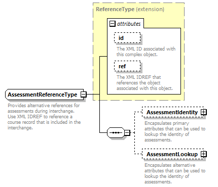
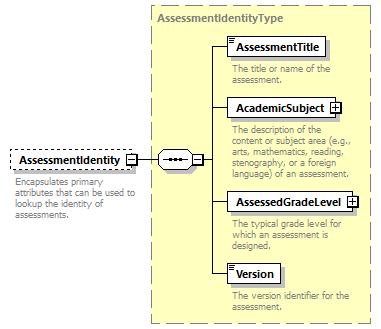
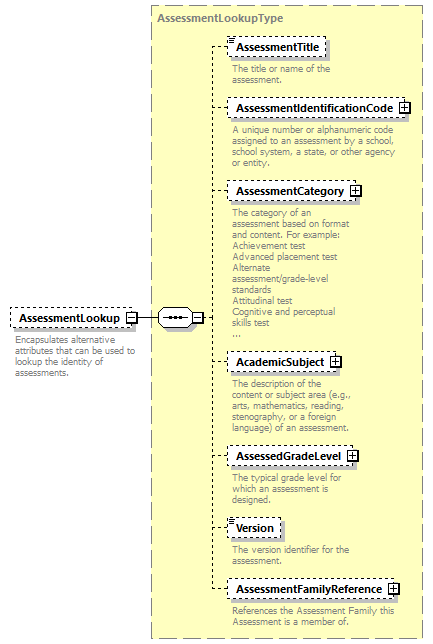

complexType
AssessmentReferenceType
element AssessmentReferenceType/AssessmentIdentity
element AssessmentReferenceType/AssessmentLookup
| diagram |  | ||||||||||||||||||||||
| namespace | http://ed-fi.org/0200 | ||||||||||||||||||||||
| type | extension of ReferenceType | ||||||||||||||||||||||
| properties |
|
||||||||||||||||||||||
| children | AssessmentIdentity AssessmentLookup | ||||||||||||||||||||||
| used by | |||||||||||||||||||||||
| attributes |
|
||||||||||||||||||||||
| annotation |
|
||||||||||||||||||||||
| source | <xs:complexType name="AssessmentReferenceType"> <xs:annotation> <xs:documentation>Provides alternative references for assessments during interchange. Use XML IDREF to reference a course record that is included in the interchange.</xs:documentation> <xs:appinfo> <ann:TypeGroup>Extended Reference</ann:TypeGroup> <ann:EdFiId>400</ann:EdFiId> </xs:appinfo> </xs:annotation> <xs:complexContent> <xs:extension base="ReferenceType"> <xs:sequence> <xs:element name="AssessmentIdentity" type="AssessmentIdentityType" minOccurs="0"> <xs:annotation> <xs:documentation>Encapsulates primary attributes that can be used to lookup the identity of assessments.</xs:documentation> <xs:appinfo> <ann:EdFiId>2104</ann:EdFiId> </xs:appinfo> </xs:annotation> </xs:element> <xs:element name="AssessmentLookup" type="AssessmentLookupType" minOccurs="0"> <xs:annotation> <xs:documentation>Encapsulates alternative attributes that can be used to lookup the identity of assessments.</xs:documentation> <xs:appinfo> <ann:EdFiId>2380</ann:EdFiId> </xs:appinfo> </xs:annotation> </xs:element> </xs:sequence> </xs:extension> </xs:complexContent> </xs:complexType> |
element AssessmentReferenceType/AssessmentIdentity
| diagram |  | ||||||
| namespace | http://ed-fi.org/0200 | ||||||
| type | AssessmentIdentityType | ||||||
| properties |
|
||||||
| children | AssessmentTitle AcademicSubject AssessedGradeLevel Version | ||||||
| annotation |
|
||||||
| source | <xs:element name="AssessmentIdentity" type="AssessmentIdentityType" minOccurs="0"> <xs:annotation> <xs:documentation>Encapsulates primary attributes that can be used to lookup the identity of assessments.</xs:documentation> <xs:appinfo> <ann:EdFiId>2104</ann:EdFiId> </xs:appinfo> </xs:annotation> </xs:element> |
element AssessmentReferenceType/AssessmentLookup
| diagram |  | ||||||
| namespace | http://ed-fi.org/0200 | ||||||
| type | AssessmentLookupType | ||||||
| properties |
|
||||||
| children | AssessmentTitle AssessmentIdentificationCode AssessmentCategory AcademicSubject AssessedGradeLevel Version AssessmentFamilyReference | ||||||
| annotation |
|
||||||
| source | <xs:element name="AssessmentLookup" type="AssessmentLookupType" minOccurs="0"> <xs:annotation> <xs:documentation>Encapsulates alternative attributes that can be used to lookup the identity of assessments.</xs:documentation> <xs:appinfo> <ann:EdFiId>2380</ann:EdFiId> </xs:appinfo> </xs:annotation> </xs:element> |